RUNBIRD AI VIDEO — STORYBOARD v1
仙台オアシスカウンセリングルーム
代表：家山 めぐみ（臨床心理士・公認心理師） ／ 業種：女性専用 心理カウンセリング ／ 動画尺：50秒（YouTube広告）
主役：30代後半の親しみある美人ママ（家山様ご指定の雰囲気／特定個人を模倣しないAIオリジナル顔）
悩み軸：仕事との両立 → 夫婦の温度差 → ワンオペ → 自己嫌悪 → アイデンティティ喪失
悩み軸：仕事との両立 → 夫婦の温度差 → ワンオペ → 自己嫌悪 → アイデンティティ喪失
女性専用
オンライン全国対応
夜間・土日OK
対面：仙台駅近く
臨床心理士・公認心理師
🎥参考広告動画（母の悩み × 寄り添い）

ムーニー「moms don't cry」
夜泣き・ワンオペ・孤独・涙——「母親はこんなにも悩んでいる」を真正面から描いた問題提起型CM。本案件のHOOK〜PROBLEM5シーンと完全に重なる軸。最後に「その時間はいつか宝物になる」と救う構造もCTA設計に流用。
▶ YouTubeで開く

AC JAPAN「家族の形が変わっても」30秒
30秒尺で家族の感情を描く王道型。落ち着いた色味・ピアノBGM・最後の言葉で泣かせる構造。当案件のCTA前の余韻設計に流用。
▶ YouTubeで開く
🧠子育てママの悩み調査（テロップ・ナレ反映済）
主要悩みTOP（HugKum／リビング東京Web／AlbaLink他の調査クロス集計・2025）
- 夫婦仲の悪化（30代の悩み上位） — 夫が分かってくれない・温度差・無関心
- ワンオペ育児 — 全体41.8%が経験。体力・精神的負担が孤独を深める
- 仕事と育児の両立ストレス — フルタイムで余裕なく、つい怒鳴ってしまう
- 怒鳴って自己嫌悪のループ — どこまで叱っていいかわからない
- 「いいお母さん」プレッシャー — 自分のアイデンティティが失われていく感覚
- 義理家族との関係（40代追加） — 板挟み
- 誰にも言えない孤独 — 友人にも夫にもこの本音は出せない
→ HOOK・PROBLEMシーンのテロップとナレを上記5項目に絞って構成。夫婦関係の温度差シーンも追加。
🎯フック案バリエ（A〜Dで運用）
案A（標準・限界の夜）
「もう、無理かも。」
夜に頭を抱える主役カット。瞬間的な共感を最大化。
案B（自責直撃）
「また、怒鳴ってしまった。」
キッチンで頭を抱えるママ。子育て罪悪感層にダイレクト。
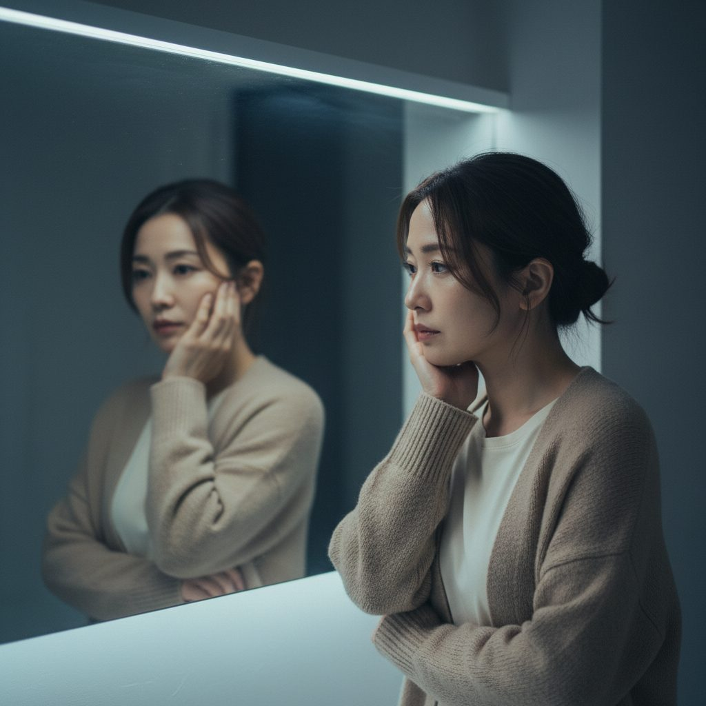
案C（自己喪失）
「私、どこにいったんだろう。」
鏡前で立ち尽くす主役。アイデンティティ喪失層に刺さる。
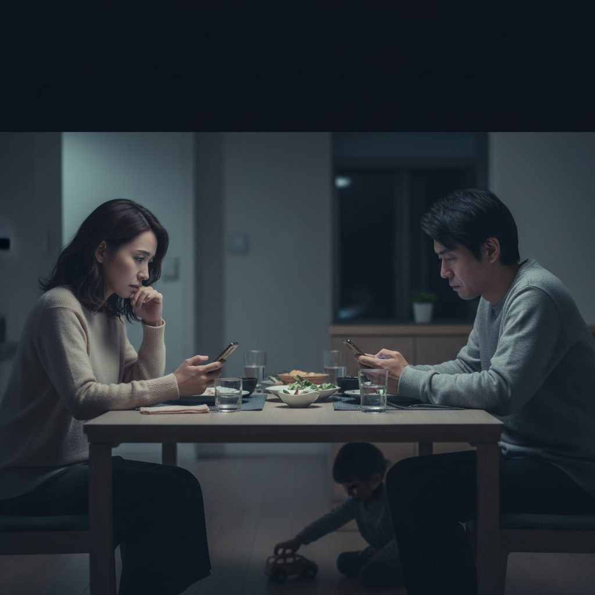
案D（夫婦の沈黙）
「話しても、ぶつかるだけ。」
夫婦間の温度差を一発で伝える新フック。30代上位悩み「夫婦仲」に直撃。
📋案件概要
📽シーン構成（全10シーン・45秒）
SCENE 01 ／ 0–3s ／ HOOK（主役登場）
「もう、無理かも。」
（息を吐く音）…誰にも、言えなくて。
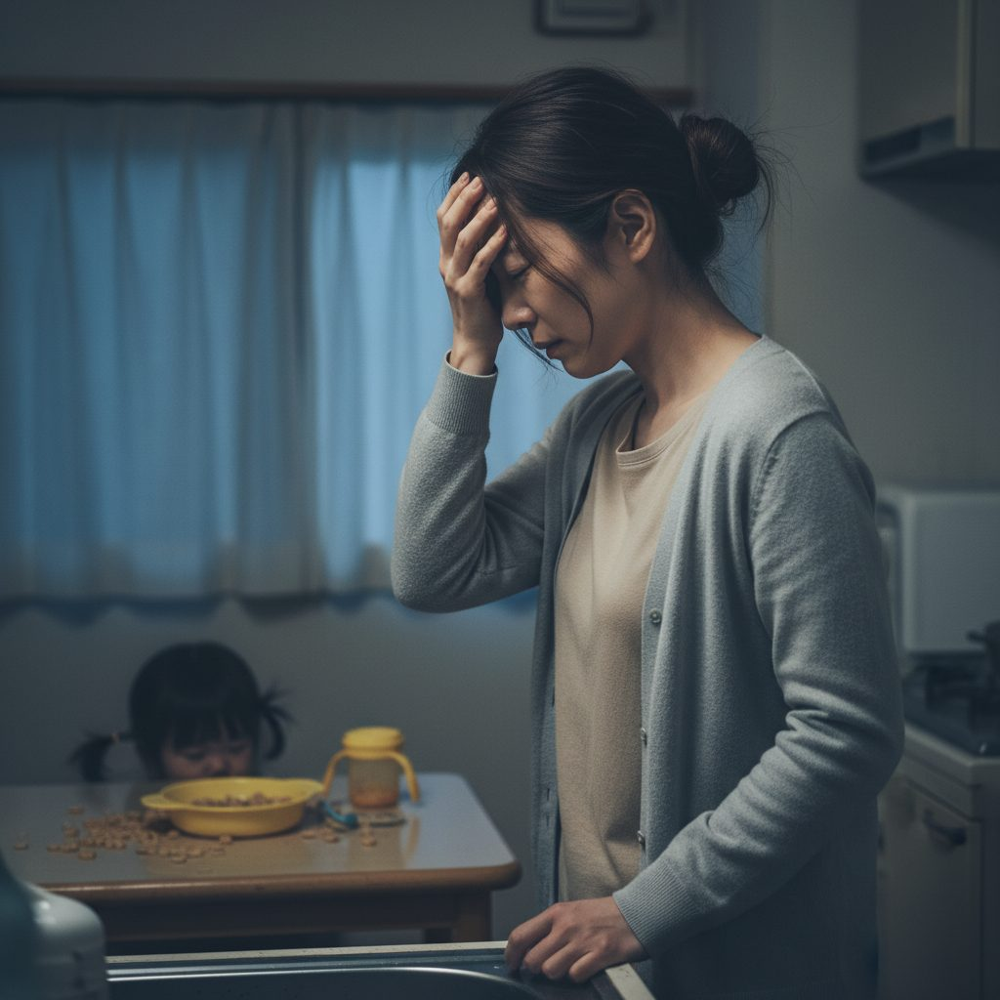
SCENE 02 ／ 3–6s ／ PROBLEM 仕事と育児の両立
「また、怒鳴ってしまった。」
仕事から帰ると、もう余裕がなくて。
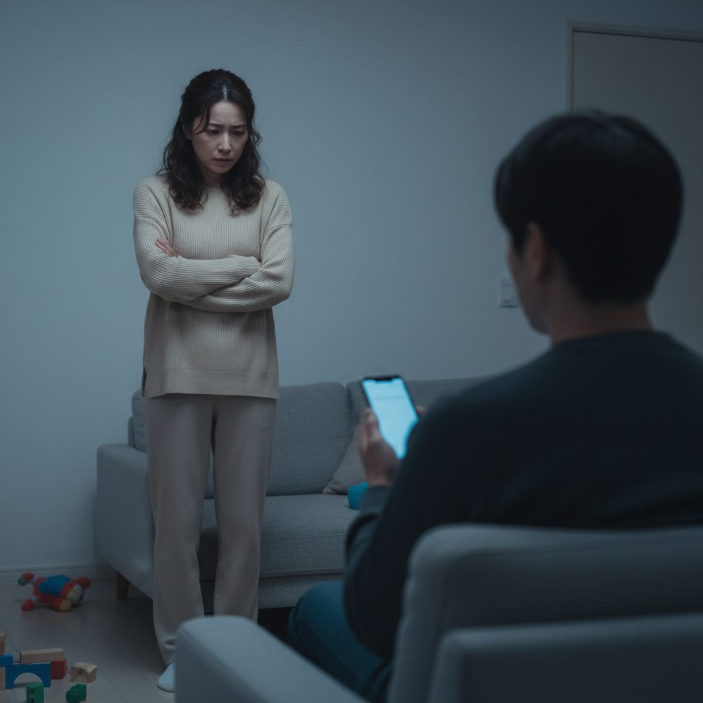
SCENE 03 ／ 6–10s ／ PROBLEM 夫婦不和
「夫は、わかってくれない。」
話しても、ぶつかるだけ。
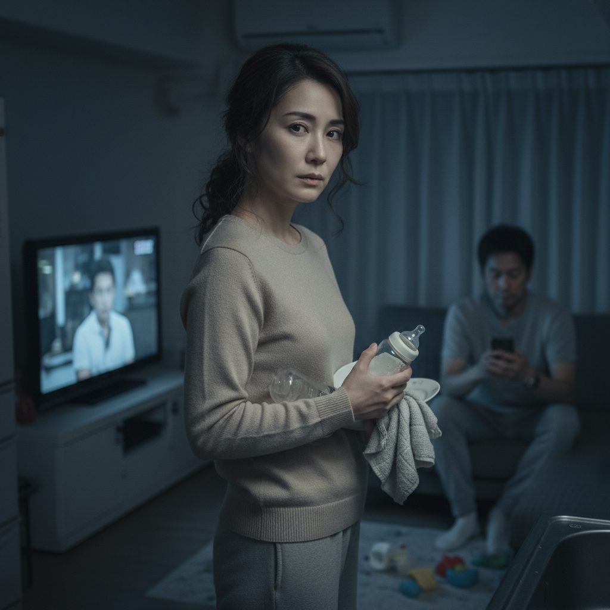
SCENE 04 ／ 10–14s ／ PROBLEM ワンオペ
「私だけが、頑張ってる気がする。」
同じ家にいても、見えていないみたい。
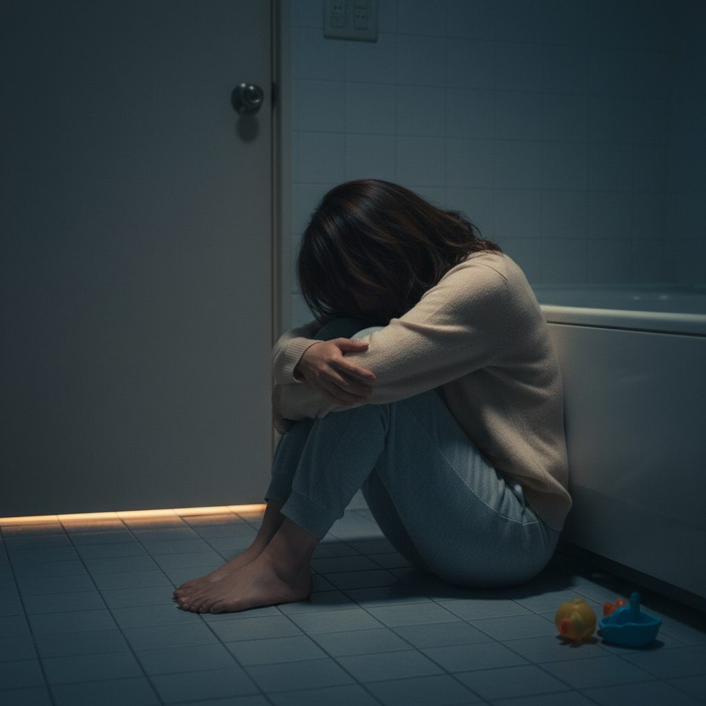
SCENE 05 ／ 14–18s ／ PROBLEM 自己嫌悪
「あんなふうに言うつもりじゃなかったのに。」
あとで一人で、泣いてしまう夜がある。
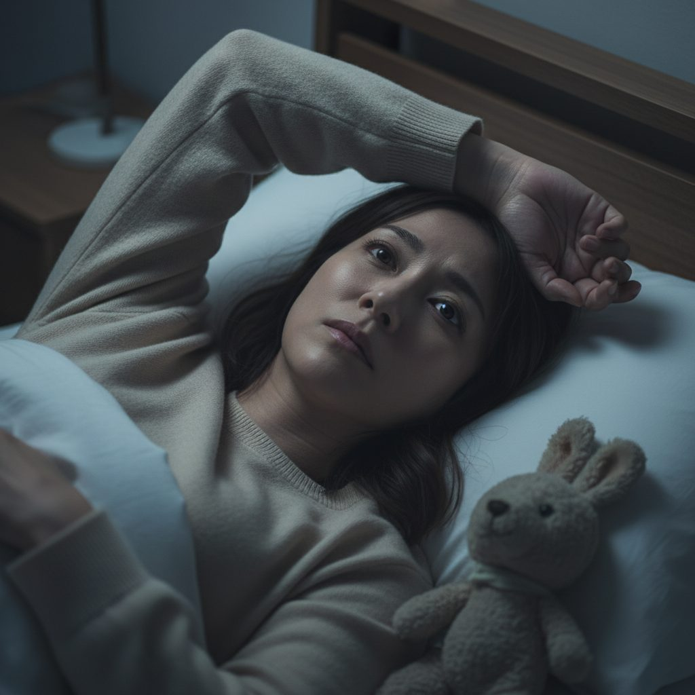
SCENE 06 ／ 18–22s ／ PROBLEM アイデンティティ
「私、どこにいったんだろう。」
いいお母さんでいなきゃ、と思うほど、自分が遠くなる。
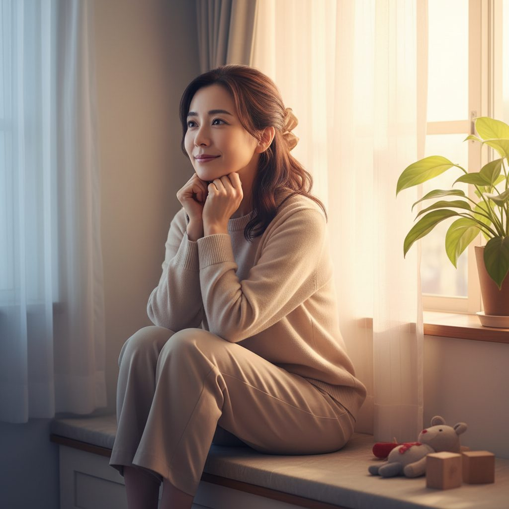
SCENE 07 ／ 22–27s ／ AFFINITY（転換点）
「ここから、変えていい。」
（間）一人で抱え込まなくていい場所があります。
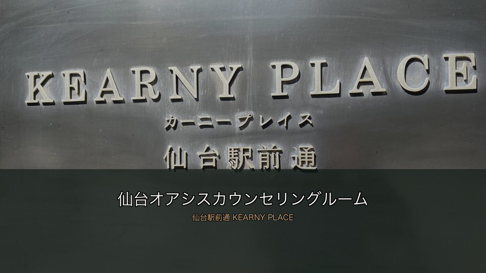
SCENE 08 ／ 27–31s ／ SOLUTION（屋号登場）
仙台オアシスカウンセリングルーム
仙台オアシスカウンセリングルーム。
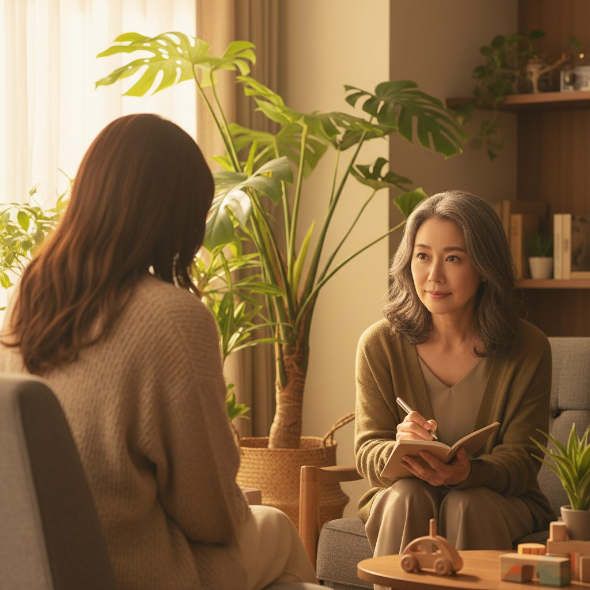
SCENE 09 ／ 31–37s ／ USP① 専門性
国家資格者による的確なアセスメント
臨床心理士・公認心理師による、女性のためのカウンセリング。
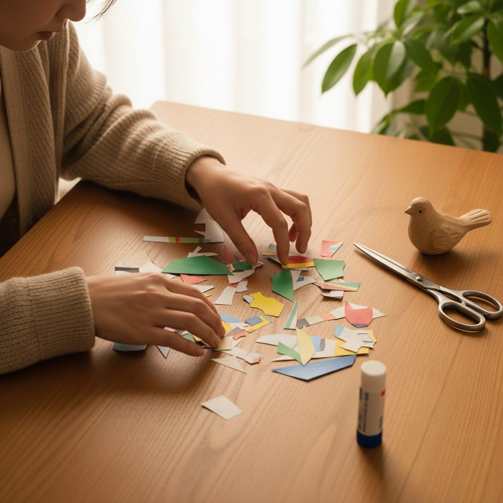
SCENE 10 ／ 37–42s ／ USP② 芸術療法
言葉にならない想いを、形に
コラージュ療法・箱庭療法で、声にならない気持ちを、形に。
SCENE 11 ／ 42–47s ／ USP③ 利便性
オンライン｜夜間・土日対応
オンライン、夜間も土日も。あなたのペースで。
SCENE 12 ／ 47–50s ／ CTA
まずは、LINEで相談
公式LINEから、お気軽にどうぞ。
🎙ナレーション全文
（息を吐く音）…誰にも、言えなくて。 仕事から帰ると、もう余裕がなくて。 話しても、夫はぶつかるだけ。 同じ家にいても、私の頑張りは見えていないみたい。 あとで一人で、泣いてしまう夜がある。 いいお母さんでいなきゃ、と思うほど、自分が遠くなる。 ——一人で抱え込まなくていい場所があります。 仙台オアシスカウンセリングルーム。 臨床心理士・公認心理師による、女性のためのカウンセリング。 言葉にならない気持ちは、コラージュや箱庭で、形にできる。 オンライン、夜間も土日も。子育ての合間でも。 公式LINEから、お気軽にどうぞ。
※ 約170字 ／ 想定発声 32〜36秒 ／ 残りは映像＋テロップ＋BGMで間を持たせる（動画尺50秒）
⚠️演出のキモ ＋ NG・審査対策
◎ 演出のキモ
- HOOK 3秒で「女性／悩み／夜」を一発で伝える
- シーン4で必ず「光が差し込む」転換カットを置く
- カウンセラーの顔は正面で見せすぎず、後ろ姿越し傾聴で感情移入
- 芸術療法は手元クローズアップで「ただ話すだけじゃない」差別化
- CTAは LINE一本に絞る（HP/Mapは小さく添える）
⚠ NG・YouTube広告審査対策
- 「治る」「治療」「改善する」は使わない → 「整える」「向き合う」「寄り添う」
- 疾患名（鬱・パニック・PTSD等）はテロップで断定しない
- 夫役の男性はシルエット／後ろ姿／ピンボケ前景に限定（顔の特定回避）
- アニメ・イラスト調NG（実写風で統一）
- 子供のアップ・泣き顔は避ける（広告審査の児童保護）
✅家山様にご確認いただきたいこと
- ⓪ 主役の顔の方向性 — 「泉里香さん風」のご要望を反映し、明るく親しみある美人ママのAIオリジナル顔で作成しました。特定個人を模倣しない範囲ですが、もう少し雰囲気を寄せる／離す方向はございますか
- ① 公式LINEのID・URL（QRコードの差し替え用）
- ② ホームページURL ／ Google Map URL
- ③ カウンセリングルームの実写写真（横向き／室内・外観）— 提供いただける時期
- ④ 代表者ご本人の動画出演について、ご希望をお聞かせください
・顔出しOK（写真or実写素材をご提供いただきます）
・後ろ姿・手元のみOK
・出演なし（AI生成キャラのみで構成） - ⑤ ナレーターは女性ナレーション（落ち着いた40代女性声）でOKか
- ⑥ 冒頭フックは A〜D のどれをメインに据えますか（A/B/Cテスト・A/B/Dテスト等も可）
- ⑦ 料金体系・初回相談無料 or 有料の表記をテロップに入れるか
- ⑧ 対人援助職向けコンサルテーションを動画に含めるか／別動画化するか
- ⑨ 配信エリア「東北＋全国」で問題ないか（オンライン中心の前提）
- ⑩ NG表現リスト（特に医療的効能表現の許容範囲）の最終すり合わせ